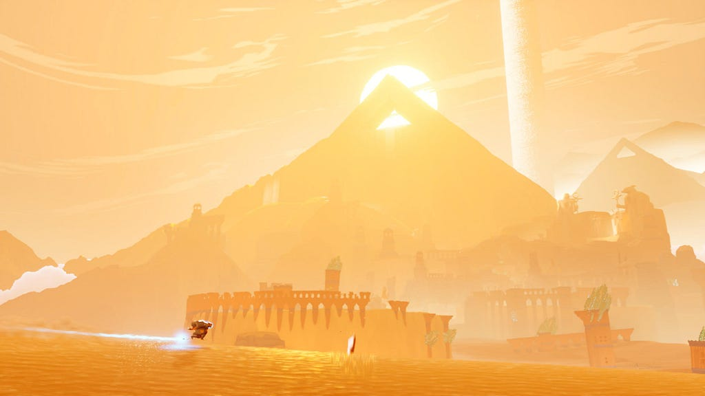
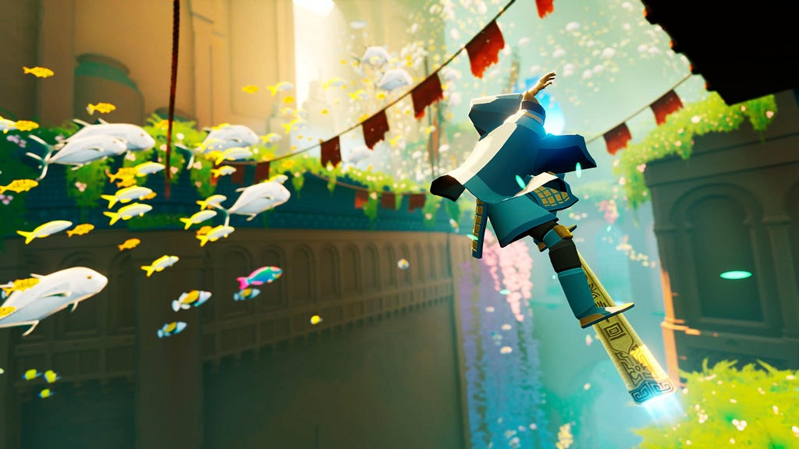
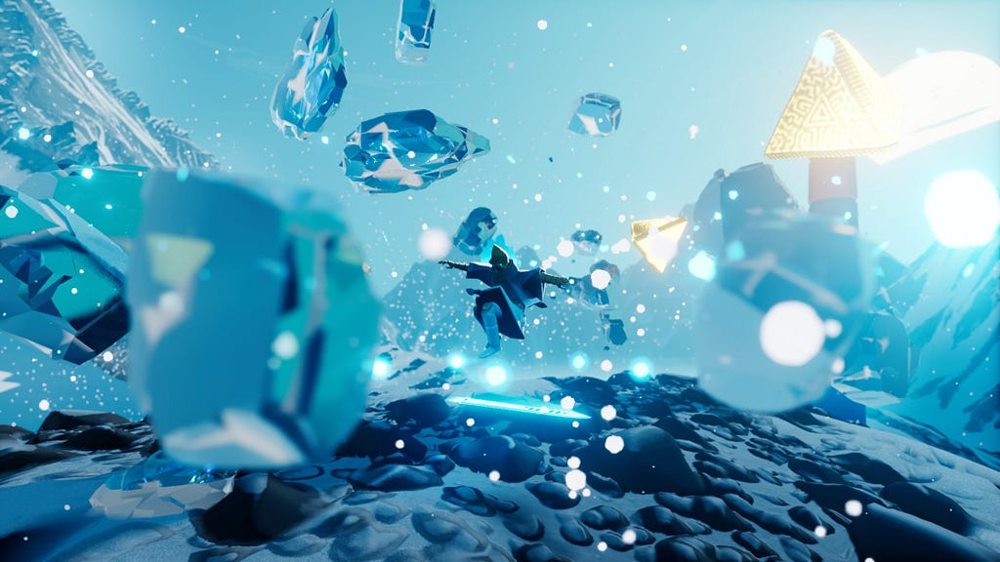
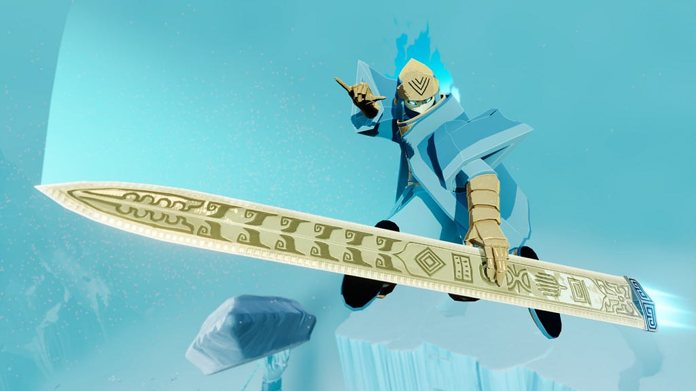

Luís Antônio Costa
Luís Antônio Costa
Em um tempo que os jogadores são bombardeados toda a semana com novos jogos recheados de mecânicas, mundos e missões para explorar, receber um título tão belo e contemplativo como Sword of the Sea é como uma brisa fresca no meio do deserto escaldante de tantas informações.
Criado pela Giant Squid (os mesmos de Abzu e The Pathless), Sword of the Sea toma inspiração direta de um dos maiores lançamentos independentes da última década, Journey. E mesmo que ele não consiga alcançar o mesmo grau de inovação e experiência imersiva desse clássico, Sword of the Sea sabe aproveitar bem o material em suas mãos e "surfa" com tranquilidade em um mar de beleza e simples contemplação.
Água e fogo
Seja no cinema ou no mundo dos games, para que uma obra seja capaz de se sustentar por conta própria sem diálogos ela precisa investir ou em uma poderosa narrativa ou em visuais impactantes. Alcançar ambos objetivos é fácil quando esses dois elementos são capazes de conversar bem um com o outro.

Journey, de 2012, sabia exatamente como fazer isso. Colocando o jogador na pele de um andarilho encapuzado no meio de um deserto sem fim, o jogo conseguia contar uma história de lembranças, exploração e conexões somente com seus visuais e com a simples mecânica de emitir sons para poder sinalizar outros jogadores que apareciam ocasionalmente para acompanhá-lo em sua jornada.
Sword of the Sea explora os mesmos temas de "descobrir uma civilização perdida", mas enquanto Journey mostrava nas suas interações com o ambiente que a sociedade havia ruído após usar e abusar de tecnologias além de seu controle, aqui temos um embate clássico entre tribos da água e do fogo (um paralelo com democracias e tiranias, ou quem sabe do homem contra a natureza, talvez?).

E esse background clássico do "bem contra o mal" já é mais que o suficiente para apreciar Sword of the Sea em sua totalidade. Além da narrativa simples, mas profunda, a única mecânica do jogo é surfar com sua espada mágica e interagir com alguns elementos do cenário. E nada de peças com sinais amarelos como em Resident Evil 4 ou Horizon Zero Dawn para indicar elementos interativos: a progressão é tão orgânica e natural quanto os movimentos do protagonista pelas areias do mundo.
Conforme você surfa pelo mundo (e até surfa com ajuda de golfinhos e tubarões gigantes), os mecanismos ativados recuperam a vida aquática dos cenários e transformam tudo a sua volta em um jogo de luzes e criaturas translúcidas que mesclam os mundos de Journey e Abzu em uma dança aquática de cair o queixo. Sem dar spoilers, o final da aventura de basicamente duas horas de duração ainda guarda um embate final contra uma serpente de fogo gigante que, além de criar uma maior imersão no mundo e história, dá um toque de emoção e desafio para o desfecho da aventura.

Mas toda a experiência criada por Sword of the Sea certamente teria fracassado não fosse pela composição da trilha sonora estar encarregada de Austin Wintory (o mesmo responsável pelas músicas instrumentais impactantes de Journey e Abzu). Cada sequência, cada local e cada puzzle é pontuado de forma sublime por uma música única.
No fim das contas, muitos podem achar que por se inspirar tão fortemente em Journey (tanto em termos visuais quanto narrativos), que Sword of the Sea está "copiando demais" mas eu não acho isso necessariamente ruim. Afinal, Matta Nava, diretor do game (e que também trabalhou em Journey) disse que muitas das ideias de Sword of the Sea eram conceitos que ele desejava ter utilizado em Journey, mas optou por não "inflar" muito o jogo naquela época. Quando uma fonte jorra água, por que não aproveitar se você ainda está com sede?

Talvez por isso Sword of the Sea não alcance o mesmo impacto que Journey teve lá atrás em 2012 para a comunidade de jogos, mas é impossível negar seu valor como uma das produções do mercado independente mais belas, simples, intimistas e, sem sombra de dúvidas, contemplativas dos últimos tempos.
Imagens cedidas por thatguyjakey .